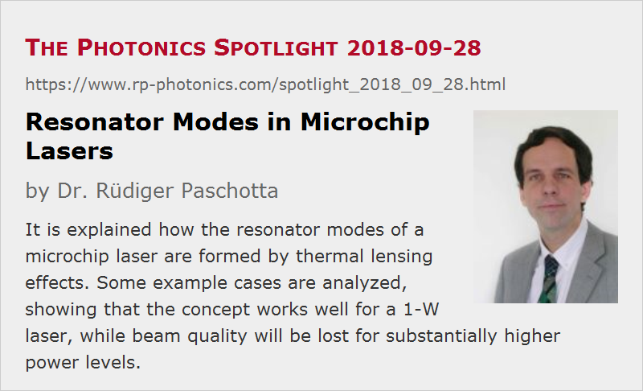

Resonator Modes in Microchip Lasers
Posted on 2018-09-28 as a part of the Photonics Spotlight (available as e-mail newsletter!)
Permanent link: https://www.rp-photonics.com/spotlight_2018_09_28.html
Author: Dr. Rüdiger Paschotta, RP Photonics Consulting GmbH
Abstract: It is explained how the resonator modes of a microchip laser are formed by thermal lensing effects. Some example cases are analyzed, showing that the concept works well for a 1-W laser, while beam quality will be lost for substantially higher power levels.

Microchip lasers are solid-state lasers, where the laser essentially consists only of a laser crystal having reflective dielectric coatings on both end faces (see Figure 1). In some cases, there is a second crystal attached to the laser crystal, e.g. a saturable absorber crystal for passive Q switching. Optical pumping is usually done with a laser diode.
Such lasers obviously have a very simple and compact setup, which is attractive for many applications where simplicity, robustness and low cost of interest. However, despite their apparent simplicity, their operation principles are not as simple as those of many other diode-pumped lasers.

In particular, it is interesting to consider the properties of the modes of such a laser resonator. Usually, the two reflecting end faces are flat, and you may wonder how a stable resonator should be formed that way. Indeed, you usually get a stable resonator only due to side effects of the optical pumping of the laser crystal. In particular, the heating which results from the quantum defect and additional deficiency of the power conversion generates a thermal lens, i.e., a focusing effect for the light going through the laser crystal. In addition, you may have some amount of gain guiding, which can also influence the mode properties.
An Example Case
As an example, let us consider a microchip laser made from at 10 mm long Nd:YAG crystal. Let us start with a very simplified model for its laser resonator, where we assume that the lensing effect is uniformly distributed over the whole crystal length, and gain guiding is ignored. Interestingly, in that situation one finds that for a given total dioptric power of the thermal lens, the mode radius is always constant along the path through the crystal. Further, the resonator is found to be stable even for arbitrarily strong thermal lensing! That is surprising, since we know, for example, that the focusing action of the curved end mirror must be below a certain limit before driving the resonator into the unstable regime. However, in that situation we effectively have a waveguide, and that has at least one guided mode for an arbitrarily strong contrast of its refractive index profile.
In reality, however, the pump power decays on the way through the crystal. So we may make a more realistic resonator model, assuming an exponential decay of pump power and heating power along the crystal. The absorption coefficient may be chosen such that most of the pump light is absorbed in a single pass. The results are shown in Figure 2:
If the thermal lens becomes rather strong, the mode size begins to vary substantially along the crystal. For even stronger lensing (from ≈320 /m on), the resonator becomes unstable. Interestingly, there are further stability regions for even stronger lensing, but these are not of practical relevance.
How strong the thermal lens will actually be, depends of course on the applied pump power and the pump beam radius. For example, let us assume that we want to make a laser with 1 W output power and 5 W intracavity power, so that the double-pass saturation power should be of the order of 1 W. (This is required in order to operate the laser ≈5 times above the laser threshold.) From that one can calculate a beam radius of ≈150 μm. The dissipated pump power will be roughly 0.35 W, and one can calculate that the thermal lens will then have a dioptric power of ≈4.5 /m. From Figure 2 one can see that the mode radius is then ≈110 μm, a bit smaller than the pump beam radius. So such a laser will probably be single-mode with perfect beam quality and reasonable efficiency.
Higher Output Powers?
How about a 10-W laser of that kind? Assuming the same degree of output coupling, we should use a 10 times larger pump beam area, i.e., the same pump intensity. The dioptric power of the thermal lens will then be the same as for the 1-W laser, despite the higher dissipated power. Therefore, we will also have the same fundamental mode radius. Now, however, the pump beam radius will now be much larger than that, so that multimode emission with poor beam quality is to be expected.
You may try to solve that problem by using a longer laser crystal, but unfortunately that does not help much. For example, if we take a five times longer crystal (50 mm – maybe no longer practical), also having five times lower doping concentration, the mode radius for thermal lensing with 4.5 /m increases only from 110 μm to 163 μm, while the pump radius should be increased from 150 μm to 475 μm. You can also not substantially change the mode radius by changing the absorption coefficient. Thus, it appears to be impossible to get perfect beam quality.
So you clearly see that the great simplicity of that kind of laser causes a substantial problem: it has very few parameters which we can adjust, and for high-power operation we run into a regime where a high beam quality is no longer feasible! This is a classical example for a laser architecture which is not power-scalable.
Conclusions
You can draw a lot of useful conclusions from these considerations:
- The resonator modes of microchip lasers are essentially determined by thermal lensing effects – much in contrast to those of most other diode-pump lasers.
- The basic laser parameters should be calculated based on some essential knowledge of laser physics. For example, one can and should calculate an appropriate pump and laser beam radius for the targeted operation parameters. Also, it is much faster and cheaper to do those calculations than just trying to build such a laser in the lab. Finding such things with a trial-and-error approach is inefficient and unprofessional.
- Such considerations also let you understand certain basic limitations of laser architectures. In our particular case, we have seen that microchip lasers cannot easily be scaled up to higher powers without losing a good beam quality. That has to do with the fact that the simplicity of the architecture gives us too few parameters for controlling the mode properties.
This article is a posting of the Photonics Spotlight, authored by Dr. Rüdiger Paschotta. You may link to this page and cite it, because its location is permanent. See also the RP Photonics Encyclopedia.
Note that you can also receive the articles in the form of a newsletter or with an RSS feed.
Questions and Comments from Users
Here you can submit questions and comments. As far as they get accepted by the author, they will appear above this paragraph together with the author’s answer. The author will decide on acceptance based on certain criteria. Essentially, the issue must be of sufficiently broad interest.
Please do not enter personal data here; we would otherwise delete it soon. (See also our privacy declaration.) If you wish to receive personal feedback or consultancy from the author, please contact him e.g. via e-mail.
By submitting the information, you give your consent to the potential publication of your inputs on our website according to our rules. (If you later retract your consent, we will delete those inputs.) As your inputs are first reviewed by the author, they may be published with some delay.
|  |
If you like this page, please share the link with your friends and colleagues, e.g. via social media:
These sharing buttons are implemented in a privacy-friendly way!